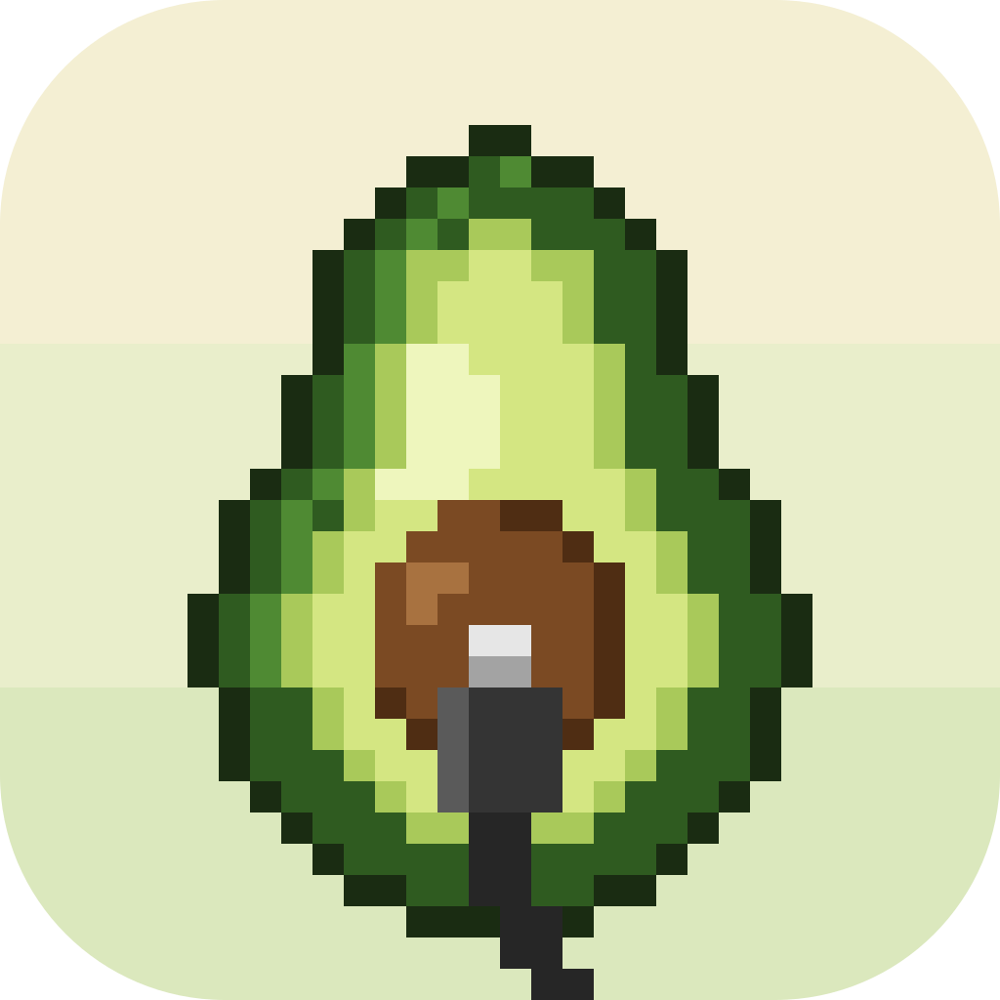
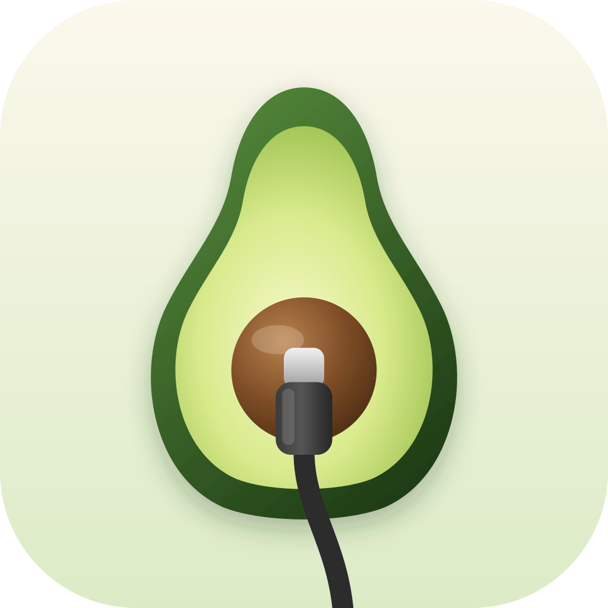
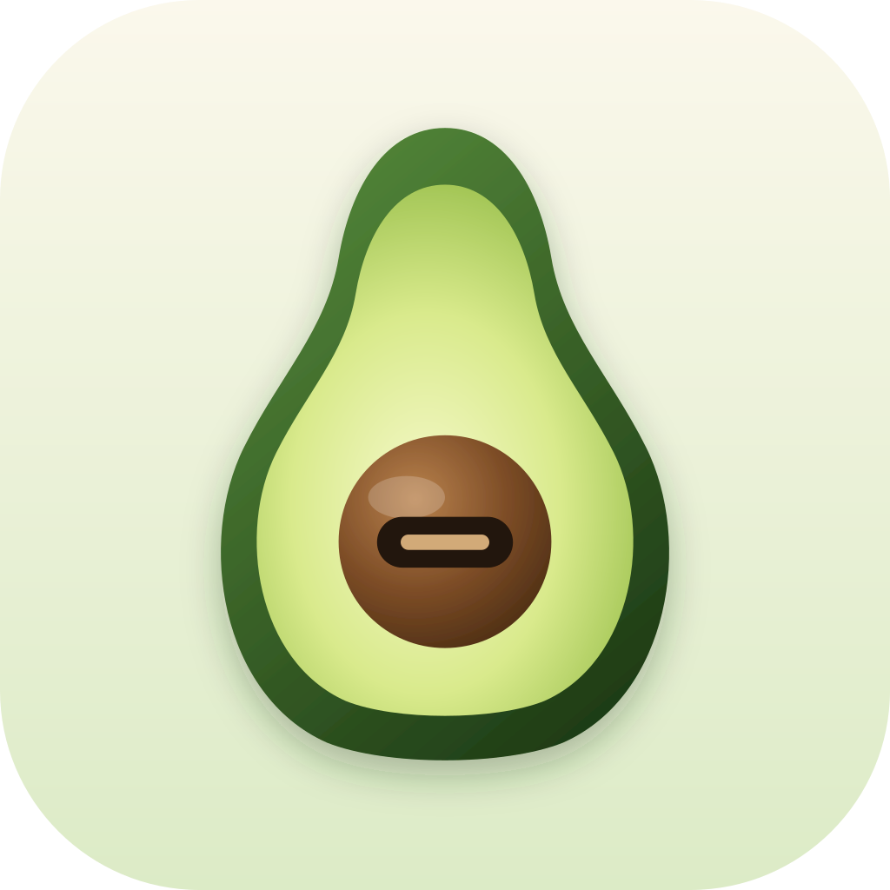

Chosen and in the app: menu bar icon A and app icon B (smooth). The pixel-art variant below was explored and kept for reference.
Your pick, "Plugged in", redrawn on a 32×32 pixel grid with a limited palette, a 1-px outline and stepped shading. Compared with the smooth version.
appicon/B-pixel.svg, generated by tools/pixel_icon.py.

Shown at real size (18 pt) in light and dark menu bars, next to other menu bar items. They're monochrome templates, so macOS tints them automatically.
Shown large, at Finder/Dock sizes on light and dark desktops, and in a Dock. macOS applies the final rounded shape and, with Icon Composer, the Liquid Glass look.

Sources (SVG, editable in any vector tool) are in macos/Design/menubar/ and macos/Design/appicon/; PNG renders are in macos/Design/previews/. See macos/Design/README.md for the specs.